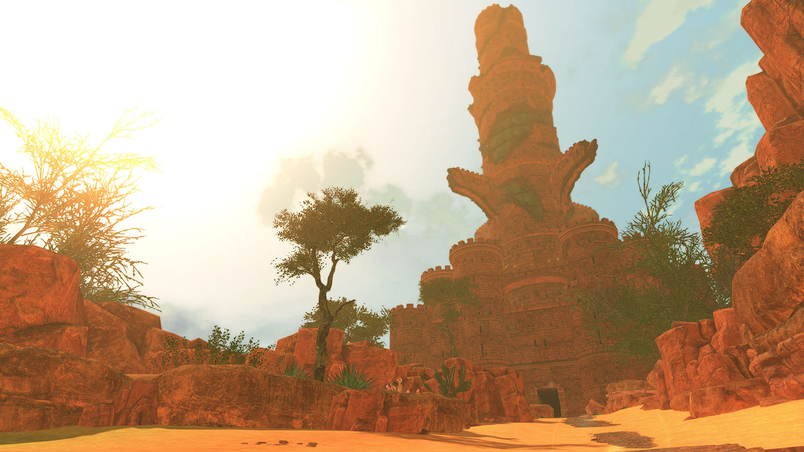

Esta região fria está localizada próximo a Alcala. É conhecida por sua montanha gelada, que se eleva sobre os campos nevados ao redor.
Esta área deslumbrante está repleta de flores e árvores em plena floração. Ande por um dos caminhos decorados com flores de cerejeira para encontrar a Trilha do Vulcão Terga.
A Trilha do Vulcão Terga o levará até a base do vulcão. Uma caverna com cristais formados pelo intenso calor da lava vulcânica pode ser encontrada aqui.
Torre de Lamure Esta torre em ruínas está abandonada em um canto do Deserto de Lamure. Embora os humanos tenham partido há muito tempo, vários monstros agora espreitam seus corredores.
Uma região vasta com terreno rochoso. Esta área contém muitas florestas primitivas, inalteradas desde os tempos antigos.